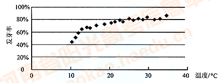
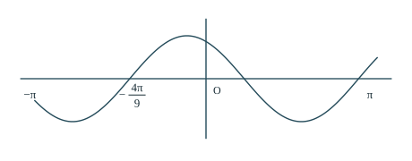
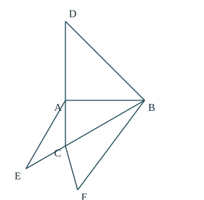
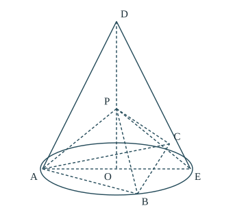
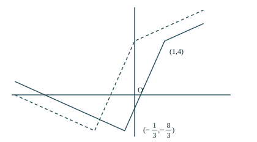

1 / 选择题 · 5 分
复数模长
条件分析 · 高中方法 · 完整推导与核查
题目
设 ，求 。思路分析
所求是一个复数运算结果的模。应先算清括号里的复数，再用模的定义；不能把减法中的模直接拆开。
详细解答
由 和 ， 因此 是实部为 、虚部为 的复数，所以 也可先因式分解：，得到相同结果。
答案与核查
选 D，。模必为非负实数。 不等于 ，不能对差这样分配绝对值。
所用高中知识
复数乘法；虚数单位；复数模；因式分解。
高中数学完整讲解 · 2026 年 10 月修订
完整收录第 1—23 题，包括两道选考题。每题从条件与目标出发，解释方法选择，展开中间计算，检查端点、分支、等号与结论，并列明所用高中知识。原考试满分 150 分、时间 120 分钟，选考第 22、23 题原要求二选一。
题目情境采用教学性重述，数学条件与选项顺序保留；示意图辅助理解，不能以目测代替证明。浏览与打印使用同一份正文和公式。
1 / 选择题 · 5 分
条件分析 · 高中方法 · 完整推导与核查
所求是一个复数运算结果的模。应先算清括号里的复数，再用模的定义；不能把减法中的模直接拆开。
由 和 ， 因此 是实部为 、虚部为 的复数，所以 也可先因式分解：，得到相同结果。
选 D，。模必为非负实数。 不等于 ，不能对差这样分配绝对值。
复数乘法；虚数单位；复数模；因式分解。
2 / 选择题 · 5 分
条件分析 · 高中方法 · 完整推导与核查
先解两个集合所对应的不等式。 固定， 是一条向左延伸的半直线；交集的右端点 在 内部，只能来自 的端点。
由 ，得 ，所以 。由 ，得 ，所以 。 因为交集为 ， 必须属于 ，而稍大于 且小于 的数不能属于 。因此 的右端点必须恰为 ，即
选 B，。回代得 ，与 的公共部分确为 。原不等式允许等号，所以端点都应写成闭端点。
一元一次、二次不等式；集合交集；区间端点。
3 / 选择题 · 5 分
条件分析 · 高中方法 · 完整推导与核查
侧面高不是棱锥的高。把顶点、底面中心、底边中点连起来，得到一个直角三角形；再把题给面积关系代入勾股式，就能只留下所求比例。
设底面边长为 ，棱锥高为 ，侧面高为 。记顶点为 ，底面中心为 ，某条底边中点为 。正四棱锥中， 底面，，而等腰侧面的高为 。 题意说“边长为 的正方形面积”等于“一个侧面三角形面积”，所以 在直角三角形 中， 两边除以正数 ，令 ，得到 解得 。因为 ，负根必须舍去。
选 C，。这个比值大于 ，符合斜边 大于直角边 。全过程只用了一个侧面的面积，不能误用总侧面积。
正四棱锥性质；三角形面积；勾股定理；一元二次方程；长度为正的限制。
4 / 选择题 · 5 分
条件分析 · 高中方法 · 完整推导与核查
到 轴的距离先给出横坐标的绝对值；抛物线的开口方向可确定横坐标的正负。再用抛物线定义，把到焦点的距离改写成到准线的距离。
因为 、，所以 。到 轴的距离为 ，故 。 对标准式 ，焦点为 ，准线是 。根据抛物线定义， 代入给出的 ，得到 ，所以 。
选 C，。此时 均在抛物线上，焦点为 ，焦距平方为 ，确为 。
抛物线定义、焦点与准线；点到坐标轴的距离；两点距离公式。
5 / 选择题 · 5 分
条件分析 · 高中方法 · 完整推导与核查

散点整体上升，但越往右增长越慢。选模型时要同时满足“递增”和“斜率逐渐减小”，不需要估计回归系数的具体值。
在题设 内，。逐一比较四类函数：
| 候选模型 | 为了递增需要 | 随 增大，斜率怎样变 | 是否符合趋势 |
|---|---|---|---|
| 斜率恒为 | 不符合逐渐变缓 | ||
| 斜率 增大 | 越来越陡，不符合 | ||
| 斜率 增大 | 越来越陡，不符合 | ||
| 斜率 减小且为正 | 符合 |
参数 只会把图像上下平移，不会改变斜率变化。若取 ，这些模型在正温度范围内会下降，与散点的上升趋势冲突，因此不能靠改变 的符号挽救其他选项。
选 D，。这是在给定区间比较模型形状，不是声称每个实验点都严格落在对数曲线上；也不能据此把模型任意外推到区间以外。
散点图与回归模型；一次、二次、指数、对数函数图像；导数作为斜率。
6 / 选择题 · 5 分
条件分析 · 高中方法 · 完整推导与核查
切线要同时满足两件事：经过切点、斜率等于该点导数。先分别算函数值和导数值，再写直线。
切点纵坐标为 ，所以切点是 。求导得 用点斜式写切线：
选 B。代入 ，直线给出 ，经过切点；其斜率也是 。只看斜率还不能区分截距不同的候选直线。
幂函数求导；导数的几何意义；点斜式直线方程。
7 / 选择题 · 5 分
条件分析 · 高中方法 · 完整推导与核查

余弦为零时有许多可能的相位。除了读出零点横坐标，还必须使用图像在该点“向上穿过横轴”以及它与原点之间的峰谷情况，确定正确相位分支。
由图像在 附近递减，而 可知 ，所以相位 随 增大而增大。 图中 是原点左侧相邻的上升零点；从这个零点到 ，图像先到达一个峰顶，再下降到 ，中间没有另一个零点。因此相位从 增加到 ，没有多走一个完整周期。 于是 最小正周期为
选 C。代入 ，相位为 ，函数值为零，导数为 ，恰好向上过轴，与图像方向一致。
余弦函数图像、相位与周期；三角函数导数；利用相邻零点确定分支。
8 / 选择题 · 5 分
条件分析 · 高中方法 · 完整推导与核查
第一因式有两项，两项都可能与 中的某项相乘得到 。分别对齐两种来源的指数，然后相加。
二项式 的一般项是 来源一：选外面的 。 相乘后为 。要得到 ，需 ，对应系数 。 来源二：选外面的 。 相乘后为 。要得到 ，需 ，对应系数 。 两种来源产生同类项，展开后系数相加，故所求系数为 。
选 C，。检查指数：，，两种来源都没有漏掉。
二项式定理；组合数；同类项合并；幂的运算。
9 / 选择题 · 5 分
条件分析 · 高中方法 · 完整推导与核查
二倍角可以用同一个 表示，使题设变成一元二次方程。求出余弦后，分别检查余弦范围以及正弦符号。
令 。由 ，原式变为 因式分解得 ，所以 或 。余弦值必须位于 ，故舍去 ，得到 。 再由 ，有 。因 ，，所以
选 A。回代 ，则 ，符合原式。
余弦二倍角公式；同角三角函数关系；一元二次方程；三角函数取值范围。
10 / 选择题 · 5 分
条件分析 · 高中方法 · 完整推导与核查
题目给的是截面圆面积，不是球的大圆面积。先求截面圆半径，再由等边三角形求球心到截面的距离，最后用直角三角形求球半径。
设截面圆半径为 ，球半径为 。由 得 。设等边三角形边长为 ，其高为 ，外心到顶点的距离为高的 ，故 所以 。题设又有 ，从而 。 球心到截面圆心的连线垂直截面，所以 。在直角三角形 中， 球表面积为 。
选 A，。球半径为 ，大于截面圆半径 ；这符合截面不经过球心的情况。不要把截面面积 直接当成球的表面积。
圆面积；等边三角形的高与外心；球的截面；勾股定理；球表面积。
11 / 选择题 · 5 分
条件分析 · 高中方法 · 完整推导与核查
先推导切点弦长如何随 变化，再找最优的 。切点弦方程直接来自“半径垂直切线”，无需记忆额外的切点弦公式。
将圆方程配方：，所以圆心 、半径 。记 ，设 。 因为从同一外点引出的两条切线等长，且 ，所以 都在 的垂直平分线上。因此 ， 为 中点。 在直角三角形 中，； 是斜边 上的高。由相似三角形或射影关系， 再由直角三角形 ， 圆心到题给直线的距离为 因此线上任意点都是圆外点，两条切线均存在。 随 严格增大，故当 最小时乘积最小，即 为 到直线的垂足。 过 且垂直题给直线的直线可写成 。代入 ，得 ，所以 、。 最后设任一切点为 。半径 垂直切线 ，令 、，则 因 ，切点都满足 是两个不同切点，所以该直线就是 。
选 D，。圆心到这条直线的距离为 ，确有两个交点；直线法向量 与 平行，符合 。
圆的标准方程；切线与半径垂直；等腰三角形；相似三角形；点到直线距离；数量积。
12 / 选择题 · 5 分
条件分析 · 高中方法 · 完整推导与核查
把底数统一后，两边很像同一个函数分别取 、 时的值，但对数部分还相差常数 。构造这个共同的递增函数即可比较。
对数有意义要求 。用指数运算和换底公式： 设 ，。因为 、 都严格递增，所以它们的和也严格递增。 注意 ，于是题设给出 严格递增函数的自变量越大，函数值越大；现在左侧函数值更小，因此必有 。
选 B。如果误写 ，就漏掉了对数中的常数 。这里不需要求出 的具体数值。
指数幂与对数换底；对数积法则；严格单调函数比较大小。
13 / 填空题 · 5 分
条件分析 · 高中方法 · 完整推导与核查
本题可以不画可行域，直接把两个关于 的限制夹在一起，先限制 ，再给目标函数找上界。得到上界后，还要展示满足全部约束的取等点。
把三个约束改写为 要存在同时满足前两式的 ，必须有 ，即 ，所以 。 利用 的上界， 最后一个不等式利用了 。若希望取等，需 且 。检查点 ： 该点满足全部限制，且 ，因此上界确实能取到。
最大值为 。这不是仅给出一个估计上界；取等点 已验证为可行点，故结论完整。
一元一次不等式；不等式估计；线性目标函数；最值的取等检查。
14 / 填空题 · 5 分
条件分析 · 高中方法 · 完整推导与核查
向量的模不便直接相减，但模的平方可以用数量积展开。利用单位向量条件，先从和的模求出数量积，再计算差的模。
因 ，且 ，平方得 所以 。因此 模是非负数，开平方取正值，得 。
答案是 。也可将和、差的模平方相加，中间数量积相消，直接得到 。
单位向量；数量积展开；向量模的平方；非负平方根。
15 / 填空题 · 5 分
条件分析 · 高中方法 · 完整推导与核查
垂直 轴意味着 与焦点有相同横坐标 。把它代入双曲线求纵坐标，再将斜率关系写成 的关系。
右顶点为 ，右焦点为 ，其中 ，所以 。设 ，代入双曲线： 因此 。因 的斜率为正数 ，而 ，故 ，应取 。 使用斜率公式， 约去 合法，因为它严格为正。因此 。
离心率为 。此时 、，可取 ，斜率为 ，符合题设。
双曲线标准方程、焦点与离心率；直线斜率；平方差分解；符号分支。
16 / 填空题 · 5 分
条件分析 · 高中方法 · 完整推导与核查

展开图中 是同一个空间顶点 的不同副本。展开不改变每个面的边长，因此先把同一条空间棱的不同副本对应起来，再在平面三角形 内用余弦定理。
从同一条棱的展开副本可知 在三角形 中，、、，所以 故 。 由于 ，在三角形 中，，所以 。又因 ，，所以 。 现在三角形 的三边全部已知。要求的是顶点 处的角，它的对边是 ，因此
答案为 。余弦为负说明该角是钝角；计算中 ，与此一致。对应副本等长，不表示展开图中的 是同一个平面点。
多面体展开图；对应棱长不变；勾股定理；余弦定理。
17 / 解答题 · 12 分
条件分析 · 高中方法 · 完整推导与核查
等差中项给出三项的线性关系，而等比通项把它化成公比的方程。第二问是“项号乘等比项”的求和，乘以公比后错位相减可让中间系数大部分抵消。
（1）求公比。 设公比为 。等比数列各项非零，因此 。由 是 的等差中项， 两边除以 ，得 ，即 。题给 ，所以 。 （2）求前 项和。 因 ，。设 整体乘以 ，得到 用第一式减去第二式：左边为 。右边常数项保留 ，中间同一幂次的系数依次为 ，都为 ，最后额外留下 。所以 前 项是公比为 的等比和： 再除以 ，得
（1）；（2）。当 时公式给出 ；当 时给出 。错位相减时末尾那一项不能漏掉。
等差中项；等比数列通项及求和；错位相减；小项数检验。
18 / 解答题 · 12 分
条件分析 · 高中方法 · 完整推导与核查

角度和垂直关系不受整体缩放影响，可令底面圆半径为 ，使坐标简洁。第一问用两次数量积为零证明线面垂直；第二问直接构造二面角的平面角，用数量积求这个平面角，避免任意法向量造成角的正负歧义。
建立坐标。 令底面为 平面，，、。底面内接正三角形的另两点取 由 ，在直角三角形 中，。题设给出 记 ，则 ，且 。 （1）证明线面垂直。 分别计算，，。故 同时垂直平面 内相交的两条直线 ，所以 平面 。 （2）构造平面角。 在底面三角形 中，、；又 。因此 由勾股定理的逆定理，。 在平面 内，从 向 作垂线，垂足为 。在平面 内，从 作射线 ，方向与 相同，使它朝向 所在半平面。由于 ，所以 ；另一边 在平面 内垂直 ，并朝向 所在半平面。于是 就是二面角 的平面角。 为便于计算这个角，求出 的坐标。设 ，由 ，有 其中 ，，所以 ，。故 射线 与向量 同向，故所求余弦为 分子为 ，因此
（1） 平面 ；（2）余弦值为 。，垂足在棱段 上；两条射线分别指向题设指定的两个半平面，且数量积为正，因此所求是锐二面角，不能任意改取负值。
圆锥与正三角形；空间直角坐标；勾股定理及逆定理；线面垂直判定；二面角的平面角；向量数量积与垂足。
19 / 解答题 · 12 分
条件分析 · 高中方法 · 完整推导与核查
本解答按通常的公平比赛模型理解题设：在任意已经发生的赛程之后，下一场双方获胜的条件概率仍各为 。因此可用条件概率乘法计算路径概率；若只给各场的边际胜率而允许结果相关，则不足以得到下面的数值结论。比赛一旦有两人各累计负两场就结束，每场恰好增加一次失败记录。因此总场数取决于冠军有没有负过一场。求丙夺冠时，以丙从第二场起的“胜、负、轮空”顺序分类，并说明轮空场为何不额外乘 。
（1）甲连胜四场。 甲依次与乙、丙、乙、丙交手并全部获胜。这四场之后乙、丙各负两场而淘汰。各场规定结果的概率均为 ，故概率为 。 （2）总共五场的概率。 两名被淘汰者各负两场，共产生四次失败；冠军只能负零场或一场。因此总场数只能是 或 。 四场结束时冠军必须零败：若甲夺冠，必须从第一场起连胜四场，概率为 ；乙同理为 ；若丙夺冠，第一场轮空，随后三场全胜即可，概率为 。三种冠军互斥，所以 （3）按丙的赛程穷尽分类。 第一场甲乙谁赢并不影响以下丙的条件概率，可以把两种首场结果合并为概率 。丙从第二场开始参赛，其所有夺冠路径如下：
| 总场数 | 第 2 场 | 第 3 场 | 第 4 场 | 第 5 场 | 路径概率 |
|---|---|---|---|---|---|
| 胜 | 胜 | 胜 | 已结束 | ||
| 胜 | 胜 | 负 | 胜 | ||
| 胜 | 负 | 轮空 | 胜 | ||
| 负 | 轮空 | 胜 | 胜 |
解释后三行：若丙第二、三场都胜，第四场胜便四场夺冠，第四场负则第五场必须胜；若丙第二场胜、第三场负，第四场按规则轮空，甲乙该场必淘汰一人，丙第五场必须胜；若丙第二场负，第三场轮空，为避免第二次失败，第四、五场必须都胜。 轮空时甲乙的两种胜负均允许，且无论谁胜，丙后续所需的胜负次数相同，所以这一场的两种结果合计概率为 ，不额外乘 。四行互斥且穷尽，故
（1）；（2）；（3）。甲乙对称，二者夺冠概率各为 ，与丙的 相加为 。比赛有轮空和停止规则，不能把三人的夺冠概率直接当成 。
概率乘法与互斥事件加法；补事件；分类讨论；有限胜负路径；对称性检验。
20 / 解答题 · 12 分
条件分析 · 高中方法 · 完整推导与核查
先用三个固定顶点的坐标和数量积求椭圆。定点问题可设 ，把两个动交点写成 的表达式，再找它们共同满足的直线方程。推导应包括 以及竖直弦的情况，避免斜率法漏解。
（1）求椭圆方程。 、、，所以 由数量积为 ，得 ，即 ；又 ，所以 ，椭圆为 。 （2）先算两个交点。 设 。因为 的横坐标与 都不同，两条直线均可写成 将 代入椭圆，乘以 后得 根 对应 ；另一根给出 同样，将 代入椭圆并乘以 ，得 除去 对应的根，得到 两个分母都严格为正，公式对所有实数 有意义。 再写一条同时通过 的直线。 考虑 将 代入，左侧分子为 将 代入，左侧分子为 所以两个点都在 上。直线系数 和 不会同时为零：若 ，第二个系数为 。而当 时， 的纵坐标异号，不会重合；当 时，，也不重合。因此 确为直线 。 最后把固定点 代入：，对所有 都成立，所以 恒过 。
（1）；（2） 恒过 。当 ， 为 轴；当 ， 为竖直线 。这两个容易遗漏的特殊情况都包含在统一方程中。
椭圆顶点与标准方程；向量数量积；直线与椭圆联立；因式分解；一般式直线方程；定点的代入验证。
21 / 解答题 · 12 分
条件分析 · 高中方法 · 完整推导与核查
第一问由导数符号判断单调性。第二问是“对所有 恒成立”，先代特殊值找出参数的必要下界，再证明边界参数确实对整个非负半轴成立。乘以 可把指数与多项式的比较改为一个导数能因式分解的函数。
（1）当 时。 因为 、 都严格递增， 严格递增；又 ，所以 时 ， 时 。因此 在 递减，在 递增。 （2）先求必要条件。 若题设不等式对所有 成立，则在 处也必须成立： 于是 ，其中 。 为什么只需证明边界参数？ 因为当 时， 所以只要 已能满足要求，更大的参数也能满足。 证明边界参数充分。 移项并乘以正数 ，要证明的式子等价于 记括号中的多项式为 。由乘积求导，，而 令 ，则 由熟知常数 ，有 ，故 。对 ， 与 都为正，只需看两个一次因式的符号：
| 区间 | 的变化 | |||
|---|---|---|---|---|
| 负 | 负 | 负 | 递减 | |
| 正 | 负 | 正 | 递增 | |
| 正 | 正 | 负 | 递减 |
因此在非负半轴上，只需比较端点 和极大值点 的值： 在 ，函数从 下降；在 ，函数上升到 ；在 ，函数又从 下降。故所有 都满足 ，边界参数确实充分。 结合必要条件，全部符合要求的参数为 。
（1）在 递减，在 递增。（2）。当 时原不等式在 取等；当 时只有 取等。若 ，直接在 处失败，因此下界不能降低。
指数函数与导数；导数符号和单调性；乘积求导；多项式因式分解；必要条件、充分条件；含参不等式与端点检查。
22 / 选考题 · 10 分
条件分析 · 高中方法 · 完整推导与核查
第一问是单位圆的标准参数式。第二问中的四次幂不会取负值，可令 ，利用 将交点问题降成一个带范围限制的二次方程。
（1）。 此时 ，所以 。当 取遍实数时， 可以绕圆一周并取得圆上的每一点。因此曲线是圆心为原点、半径为 的圆。 （2）。 先用 ，将 化为 令 ，那么 代入直线，得 。展开并整理： 所以 或 。第二个根超过 ，不可能等于 ，必须舍去。 可由 等取得，于是 。
（1）单位圆；（2）唯一公共点为 。代入直线得 ；代入参数 时四次幂也都为 。不同参数值可能给出同一个点，不能把参数个数当作交点个数。
参数方程；三角恒等式；极坐标转换；换元法；一元二次方程及根的范围。
23 / 选考题 · 10 分
条件分析 · 高中方法 · 完整推导与核查

第一问以两个绝对值内部为零的位置作为分界点，画出三段直线。第二问比较 与 ，分界点要同时包括原函数与平移函数的全部转折点，不能只沿用第一问的两个点。
（1）写分段式并画图。 两个绝对值的分界点为 和 。
| 范围 | 的符号 | 的符号 | 去绝对值后 |
|---|---|---|---|
| 负 | 负 | ||
| 非负 | 负 | ||
| 正 | 非负 |
因此图像由三段直线组成：左侧斜率 ，中间斜率 ，右侧斜率 ；相邻线段连接于 与 。可再标出 辅助作图，连接点都属于图像。 （2）比较平移前后。 的转折点满足 或 ，即 或 。把四个分界点按顺序排成 ，逐段计算差 ：
| 范围 | 的结果 | |||
|---|---|---|---|---|
| 全部符合 | ||||
| 无解 | ||||
| 此段小于 ，无解 | ||||
| 无解 |
第二行还要与本行范围相交，得到 。与第一行 合并，得到 。
（1）图像及三段式如上；（2）解集为 。在 时差恰为零，题目要求严格大于，所以端点不能包含；在 时差为 ，该点包含在解集中。
绝对值分段；一次函数图像；图像平移；分段不等式；区间合并与端点检查。
核对了所提供的 dot、histroy、dist 三组版本，并逐页核对原题扫描。正文保留全部题号、数学条件和选项；讲解重新展开为高中范围内可跟随的推导。
图形若标为趋势图或示意图，只表达解题所需关系；近似散点不是原始实验数据。第 22、23 题均完整保留。本版经代数、概率枚举和结构检查，仍属于教学整理稿；程序核验并不等于全部证明的形式化认证。